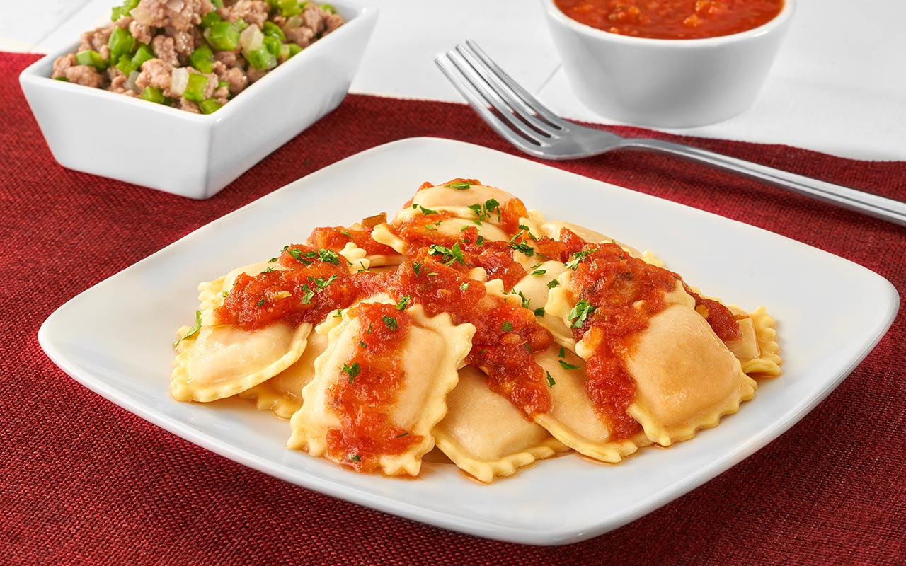

recetas
Ravioles caseros

Descripción
Los ravioles son una pasta rellena tradicional de la cocina italiana que se ha vuelto un clásico en los almuerzos de domingo. Se pueden rellenar con una gran variedad de ingredientes, desde carnes hasta vegetales y quesos.
En esta receta, nos enfocaremos en unos ravioles clásicos de ricota y espinaca con una salsa roja sencilla.
Ingredientes
- 500g de masa para pasta fresca.
- 300g de ricota fresca.
- 200g de espinaca cocida y picada.
- 100g de queso parmesano rallado.
- Sal, pimienta y nuez moscada al gusto.
- Salsa de tomate para acompañar.
Pasos
- Mezclar en un bol la ricota con la espinaca, el queso y los condimentos para el relleno.
- Estirar la masa de pasta hasta que quede fina y colocar pequeñas porciones de relleno separadas entre sí.
- Cubrir con otra capa de masa, presionar los bordes para quitar el aire y cortar los ravioles.
- Hervir abundante agua con sal en una olla grande.
- Cocinar los ravioles hasta que floten en la superficie (aproximadamente 3 a 5 minutos).
- Colar y servir inmediatamente con la salsa de tomate caliente.